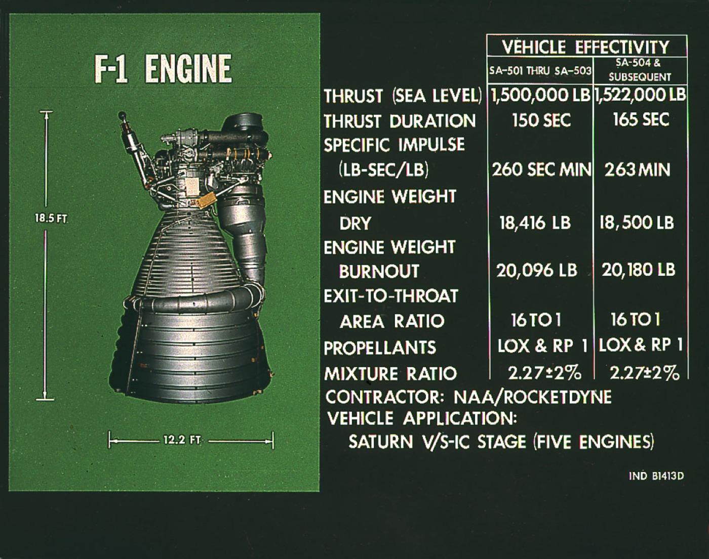

Thrust and TWR — how much push per kilogram you actually need
A rocket has to push harder than it weighs, or it sits on the pad. The ratio is called TWR. Every operational launcher in history has lifted off in a narrow band around 1.2 to 1.5.
Thrust is force. The unit is newtons (or kilonewtons / meganewtons for anything that flies). A Merlin 1D produces 845 kN at sea level. A single F-1 produced 6770 kN. SLS boosters each produce 16,000 kN. Thrust is not specific impulse: thrust says how *hard* the engine pushes; Isp says how *efficiently* it does so. A high-thrust low-Isp engine (a solid booster) and a low-thrust high-Isp engine (an ion drive) can both be useful — for different jobs in different parts of a mission. The thrust equation is simple: thrust equals the propellant mass flow rate multiplied by exhaust velocity, plus a small pressure term where the nozzle exit pressure differs from ambient. That is why staged combustion engines with high chamber pressure produce more thrust per kilogram of engine mass — they push more propellant through the same throat per second at higher velocity.
Thrust-to-weight ratio (TWR) is thrust divided by the vehicle's *current* weight on Earth. At lift-off it must be greater than 1, or the rocket cannot leave the pad. In practice you do not want TWR right at 1.0 because every second spent fighting gravity without altitude gain is propellant burned with no upward velocity gained — gravity losses. The accountants' sweet spot is TWR 1.2-1.5 at lift-off. Saturn V lifted with 1.18, which was felt to be uncomfortably low — the vehicle rose so slowly the launch tower nearly snagged the engine bell. Falcon 9, SLS, and Starship all sit in the 1.3-1.5 band by design. The Soviet N1 was 1.07, marginal even when the engines worked; all four flights failed.
TWR also matters mid-flight. As propellant burns, mass falls and TWR climbs — by main-engine cut-off a first stage's TWR can be 3-4. Saturn V's S-IC inboard F-1 was shut down early to keep crew accelerations below 4 g. Modern reusable boosters (Falcon 9, Starship) shut down some engines and throttle the rest for the same reason — and to leave enough propellant for the boost-back and landing burns. Upper stages run at lower TWR (often 0.7 at ignition) because they are firing horizontally in vacuum where gravity losses do not eat them and high Isp matters more than getting to peak thrust quickly.
How much push per kilogram do you actually need for lift-off? With TWR 1.3 and Earth gravity 9.81 m/s², the engines need to deliver about 12.8 N/kg of vehicle mass. Stack that up for a 3000-tonne vehicle (Saturn V wet mass) and you need 38 MN of thrust — which is exactly why Saturn V used five F-1 engines totalling 33.9 MN at sea level, rising past 40 MN as ambient pressure dropped. For Starship (5000 tonnes wet) you need ~64 MN, which is why the Super Heavy booster carries 33 Raptors. The number of engines a stack carries is not a styling choice — it falls out directly from the TWR-vs-launch-mass arithmetic and the thrust of the largest engine the programme could develop.

SEE IN THE APP
- /fleet Lift-off TWR for every launcher in fleet view — Saturn V (1.18), Falcon 9 (1.4), SLS (1.4), Starship (1.5), Long March 5 (1.3), N1 (1.07, marginal)